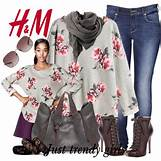
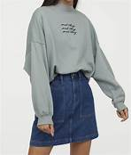

H&M
H&M is a Swedish multinational clothing company headquartered in Stockholm. It is known for its fast-fashion clothing for men, women, teenagers, and children. As of November 2019, H&M operates in 74 countries with over 5,000 stores under the various company brands, with 126,000 full-time equivalent positions. It is the second-largest global clothing retailer, behind Spain-based Inditex (parent company of Zara). Founded by Erling Persson and run by his son Stefan Persson and Helena Helmersson, the company makes its online shopping available in 33 countries.The company was founded by Erling Persson in 1947, when he opened his first shop in Västerås, Sweden. The shop, called Hennes (Swedish for "hers"), exclusively sold women's clothing. A store was opened in Norway in 1964. In 1968, Persson acquired the hunting apparel retailer Mauritz Widforss in Stockholm, which led to the inclusion of a menswear collection in the product range and the name change to Hennes & Mauritz. The company was listed on the Stockholm Stock Exchange in 1974.Shortly after, in 1976, the first store outside Scandinavia opened in London. H&M continued to expand in Europe and began to retail online in 1998 when bought the domain hm.com from a company called A1 in a non-published domain transaction.[citation needed] The two-letter domain was registered 1997, according to data available via Whois. The opening of its first U.S. store on 31 March 2000, on Fifth Avenue in New York City marked the start of the expansion outside of Europe. In 2008, the company announced in a press release that it would begin selling home furnishings. Initially distributed through the company's online catalog, there are now H&M Home stores located internationally.[where?] Following expansion in Asia and the Middle East and the launch of concept stores including COS, Weekday, Monki, and Cheap Monday, in 2009 and 2010, branding consultancy Interbrand ranked the company as the twenty-first most-valuable global brand, making it the highest-ranked retailer in the survey. Its worth was estimated at $12–16 billion. H&M operated 2,325 stores at the end of 2011, and 2,629 stores at the end of August 2012.sIts 3,000th store opened in September 2013 in Chengdu, China.In October 2020, H&M announced that they are planning to close 5% of their worldwide stores in 2021, as a result of the COVID-19 pandemic
